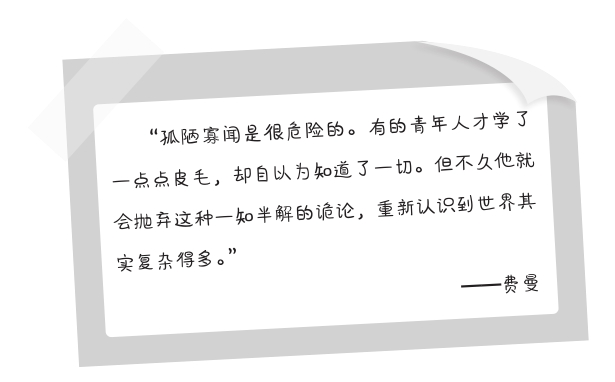
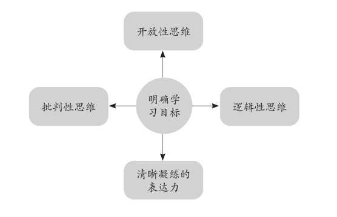

第三章
我们为什么学习
我发现，离开学校这个场景后，督促孩子学习成了一件对所有的家长都非常困难的事情。有的家长告诉我，自己的孩子不但作业做不好，网课也没有效果，自主学习能力很差。还有的家长说，孩子在家庭这个生活氛围中找不到学习的感觉，父母亦不清楚该教他怎么去学。时间久了，学习变成了一件拖沓而枯燥的任务，他们非常焦虑。
主动学习比以往任何时候都更加重要，正如费曼所说，我们需要理解学习的意义，并且在这种意义中加强对于学习对象的认知，构建一种内在联系。他说：“要对学习做简单化的理解，就像做一个好玩的互动游戏一样，别想得太复杂，因为知识本身就没那么复杂。”和第一章不同的是，我们在本章将着重阐述费曼学习法的第一个步骤——当你希望掌握一门知识和技能时，怎样正确地树立目标？当锁定目标以后，又如何发现学习它的必要性和它为我们带来的重要意义？
现实中，人们大部分场景下的学习都处于一种“无意识”的状态。它表现为两种典型的特征：
第一，老师/父母让我学什么，我就学什么（服从式学习）；
第二，就业/培训需要学什么，我就学什么（工具式学习）。
在无意识的学习状态中，你会感觉到自己不停地学习新知识。你从不浪费时间，也极少敷衍应付，但对知识却浅尝辄止，难以深入，甚至记不住大体的概念。你只收获了对知识粗浅的印象，或者仅局限于功利性应用的部分。在这种状态中，你一直在输入知识，但很难深度地理解知识。
不久前我问一位学生：“最近你终于有时间读自己想读的书了，开心吗？”
没想到他回答：“一点也不！”
“为什么？”
他说：“在学校时有老师和同学，每天讨论，写清单，列目标，感觉我有很多想学的东西。但一个人有大把的时光，能够自由选择时，我反而不知道该读什么了。”
以输入为主的被动学习经常会面临这种窘境。你习惯了有人替你制定目标，引导和监督你执行一份并不愉快的学习计划。你反感这样的环境，希望以自己喜欢的方式学习。可这种力量突然失去后，你发现早已经对这种低效的学习方式产生了依赖。
当我们开始尝试运用费曼技巧改变过去的学习思维时，从费曼技巧的第一步起，我们就能收获与众不同的体验。学习不再是被动服从和由功利驱动的“输入”，而是我们自觉甚至是开心地实施有意识的主动学习，也就是以“输出”为载体的“有选择的输入”。它的前提是我们为自己重新确立了学习的意义。
知道为了什么而学习
有位学生问我：“我可能一辈子也用不上几个高深的数学知识，学习还有什么用呢，岂不是浪费光阴？我拿这些时间干点别的不好吗，比如了解我最喜欢的天文物理？因为我的志向是加入国家天文台的‘巡天计划’。”
我反问：“那你怎样理解数学？”
“理解数学？”他并未仔细想过这个问题。在他的学习系统中，学习的逻辑是“为了学习而学习”，讲得再明白一点，是“为了就业而学习”，像他渴望参加的“巡天计划”，那是他就业的目标。
然而，他感到困惑的其实是两个截然相反的问题。“数学有什么用”和“学数学有什么用”是不一样的，他困在后面的逻辑圈里，就像大部分年轻人目前的心态。他们的学习态度无比端正，志向远大，却从根本上认为学习只是一个达到目的的手段，而不是将学习本身当作一件非常有趣的事情。对于为什么要学习，他们的了解仅此而已。

下面我们来看一看学习某个知识的“有用”是何所指，“有用”在你看来到底是什么意思呢？是指对学习数学的某个人吗？如果是，那具体的作用是什么？是指数学可以让你赚更多的钱，还是解决各类与数学有关的疑难问题，或者是可以让你更聪明并因此获得快乐？
继续延伸下去，还有其他数不胜数的作用。学习数学是指对别的学科有帮助吗？如果是，具体是哪些学科？是对社会有价值吗？如果是，能否总结出这些价值？比如，学习数学能够促进社会的发展，优化社会资源的配置，改变社会的观念，等等。
认真回答这个问题，到一定的阶段必然出现一个终极答案：学好一门知识的前提是必须充分地理解这门知识，包括它尚待开发的价值。显然，在我和学生简短的对话中，我们没有时间讨论这么多，但在阅读本书时，读者可以沿着这条思维脉络对自己要学习的目标进行“问答测试”，这么做的好处是显而易见的，它能帮助你迅速地发现一个清晰的学习目标，这对理解后面的内容大有裨益。
追求四个方面的进步
目标明确的学习可以极大地改变一个人的思维，对于训练和改进我们的思维方式而言，这是一个必不可少的基础。它主要体现在四个方面：

第一，开放性思维。
充分地了解一门知识，首先提升的是思维的开放性，能够接受新的观点，拓展新的视野，使自己跟上时代的发展。
第二，批判性思维。
作为主动和独立的学习技巧，运用费曼学习法可以很快了解自己所学知识的程度，并且以科学的怀疑精神寻找反证，养成批判性思考的好习惯。
第三，逻辑性思维。
目标专注的学习能锻炼你思维的逻辑性，这需要你长久地聚焦和沉注于一个主要的问题并且反复思考。
第四，清晰凝练的表达力。
以教代学的输出方式考验你的语言组织和表达能力，在输出的过程中可以对所学的知识做多次的提炼浓缩，简化成通俗易懂的版本。
费曼学习法对于我们理解学习的意义和考察对于目标的专注程度，是一个真正有效而节省成本的好方法。在思维的开放性、批判性、逻辑性以及更为清晰地表达观点这些方面，都能起到非常积极的作用。就这四项能力的提升而言，费曼学习法短时间内带给我们的进步也是巨大的，并不需要等待太长的时间。